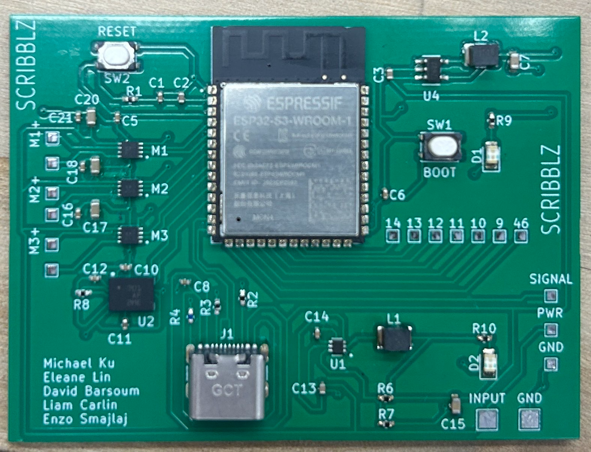
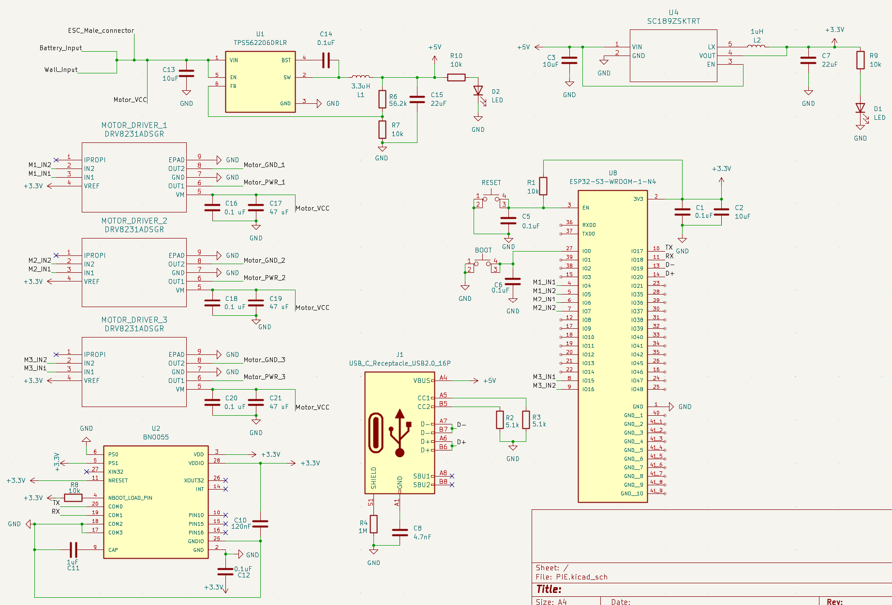
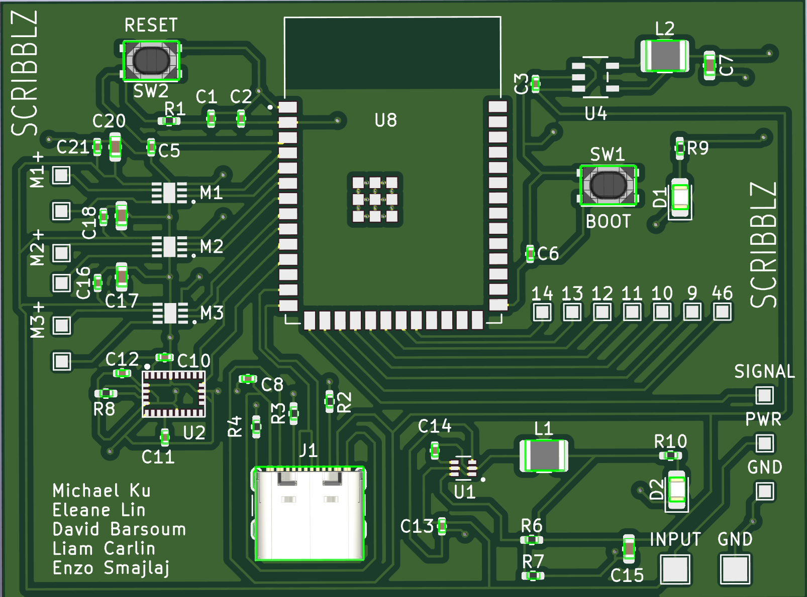
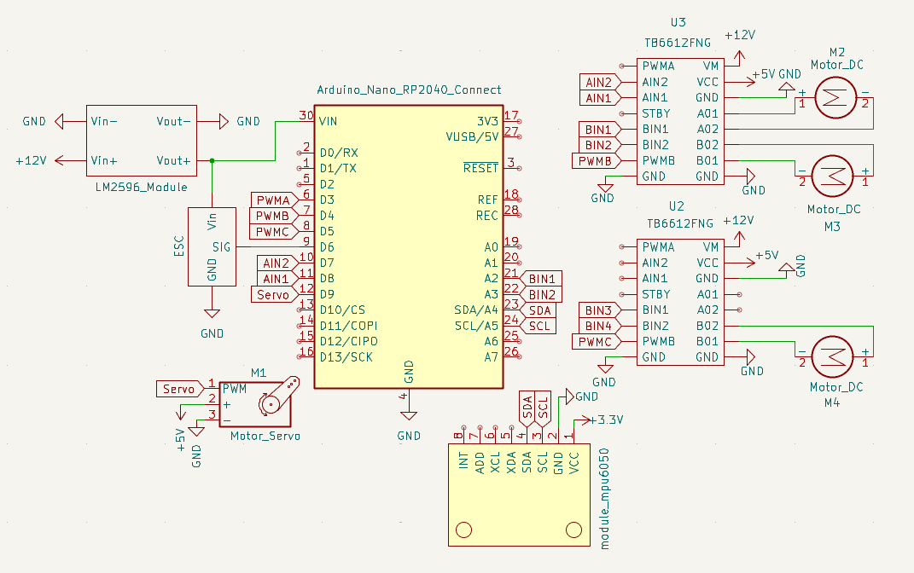

Electrical Systems
Original Design Goal
Our original goal was to design a custom, compact, and
lightweight PCB that could be mounted directly
on the robot. This board would handle power regulation, use an ESP32 as the main
controller, drive the robot's wheels for vertical motion, and control the impeller system. To enable
full mobility, the system was intended to be battery powered and fully wireless.
Initial Development & First PCB
Iteration

To achieve this, we began by designing our own PCB in
KiCad. The initial architecture
centered around the ESP32, paired with a BNO055 IMU for orientation
sensing and DRV8231 motor drivers to handle the primary actuation needs of the
robot.
While this PCB was under development, we validated the
robot's mechanical and control concepts using
an Arduino with a motor shield. This allowed us to test wheel
control and impeller signaling early, independent of the custom board.
First PCB Design
This process resulted in our first full PCB design. The
board included:
- A USB connector for programming and debugging
- An ESP32 microcontroller
- IMU and motor driver circuitry
- Onboard power regulation


Challenges Encountered
After finalizing the design, we ordered components and
attempted assembly. During this phase, several
issues became apparent:
- The USB port was not properly grounded
- The USB connector was placed too close to the edge of the board, creating
mechanical and assembly challenges
- Excess solder paste led to shorted components
- Multiple faults arose that were difficult to debug within the available timeframe
As the project deadline approached,
we made the decision to pivot in order to ensure a reliable and
functional final system. At the same time, we reassessed our initial battery-powered goal and found
that battery weight significantly reduced wall adhesion performance, making fully
wireless operation impractical for this iteration.
Revised Design Goal
Create a functional, lightweight, and streamlined electrical system that operates reliably and does
not interfere with the LiDAR or overall robot operation.
Rather than prioritizing full battery-powered autonomy,
we focused on robustness, simplicity, and
successful integration with the rest of the system.
Final Electrical Architecture
Despite the pivot, our core requirements remained the
same:
- Motor drivers for three wheels
- A WiFi-enabled microcontroller for wireless teleoperation
- Reliable power regulation
- IMU-based orientation feedback
Main Components
- Arduino Nano RP2040 Connect
- LM2596 buck converter
- MPU-6050 IMU module
- TB6612FNG dual DC motor driver
- S-240-12 power supply (12V, 20A)
These components were used alongside
the robot's:
- Brushless motor (impeller)
- DC motors (drive wheels)
- Servo motor
Final Schematic
Using this revised architecture, we produced a final
electrical schematic that met our functional
needs while remaining lightweight and mechanically unobtrusive.

Final Implementation & Integration
While we ultimately moved away from our custom PCB
design, we remained committed to creating a clean, professional electrical system. Despite using
prebuilt modules instead of a custom board, we carefully selected components that were compact
enough to fit within the gaps in the top cap of our robot.
Compact Integration & Clean Wiring

Each module was strategically positioned to maximize
space efficiency while maintaining accessibility for debugging and adjustments. We implemented
meticulous wire management techniques to ensure the robot remained sleek and clean, with all
connections properly routed and secured to prevent interference with the mechanical systems.
Power System Evolution
One of our most significant design changes was the
transition from battery power to a constant tethered power source. While this meant the robot was no
longer fully wireless, it provided several critical advantages:
- Unlimited runtime without battery weight compromising wall adhesion
- Consistent, reliable power delivery without voltage drops
- Elimination of battery charging downtime during testing
To manage the tethered connection
cleanly, we incorporated a slip ring into our design. This rotary electrical contact allowed the
robot to rotate freely while maintaining continuous power and data connections, preventing wire
tangling and ensuring smooth operation during complex drawing maneuvers.
Trade-offs & Lessons Learned
The shift to prebuilt modules represented a significant
trade-off in our design philosophy. We sacrificed the elegance and compactness of a custom PCB for
the reliability and rapid development time that commercial modules provided. While our original
vision of a sleek, integrated custom board remained unrealized, the modular approach offered
distinct advantages:
- Increased reliability: Proven, tested components reduced debugging time
- Faster iteration: Easy component swapping enabled rapid prototyping
- Simplified troubleshooting: Modular design made fault isolation straightforward
- Reduced risk: Eliminated PCB fabrication and assembly uncertainties
In the end, our electrical system
successfully met all functional requirements. While it may not have achieved the aesthetic
perfection of our original custom PCB vision, it delivered a robust, reliable platform that allowed
us to focus on perfecting the mechanical and software systems. The result was a fully functional
robot that consistently performed its drawing tasks—proving that sometimes pragmatic engineering
decisions lead to the best outcomes.